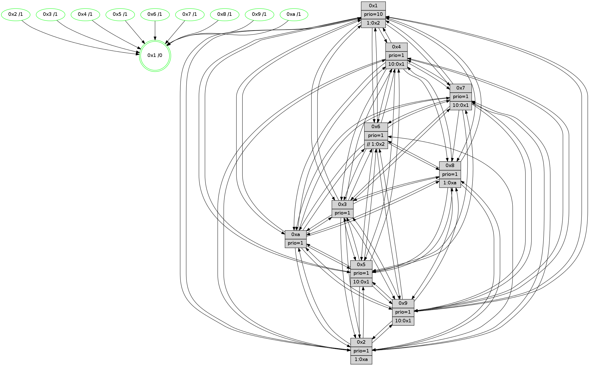

>> << IDX [start] -100 -25 -5 +0 +5 +25 +100 [1320.54797196]
 Previous packets
----------------------------------------------------------------------
1315.031059 beacon01(faad) #0 coord=01,02,03,04,05,06,07,0a,09,08 cycle=688.0ms assoc
-- color-indic=1 64 60 35
1315.041044 beacon02(faad) #0 coord=01,02,03,04,05,06,07,0a,09,08 cycle=688.0ms assoc 64 f3 04
1315.051042 beacon03(faad) #0 coord=01,02,03,04,05,06,07,0a,09,08 cycle=688.0ms assoc 64 89 49
1315.061043 beacon04(faad) #0 coord=01,02,03,04,05,06,07,0a,09,08 cycle=688.0ms assoc 64 fe a3
1315.071041 beacon05(faad) #0 coord=01,02,03,04,05,06,07,0a,09,08 cycle=688.0ms assoc 64 84 ee
1315.081043 beacon06(faad) #0 coord=01,02,03,04,05,06,07,0a,09,08 cycle=688.0ms assoc 64 0a 39
1315.091043 beacon07(faad) #0 coord=01,02,03,04,05,06,07,0a,09,08 cycle=688.0ms assoc 64 70 74
1315.101047 beacon0a(faad) #0 coord=01,02,03,04,05,06,07,0a,09,08 cycle=688.0ms assoc 64 01 7f
1315.121047 beacon08(faad) #0 coord=01,02,03,04,05,06,07,0a,09,08 cycle=688.0ms assoc 64 f5 e5
1315.132308 [Hello(1): seq=748 sym=4,2,9,5,10,3,8,6,7 sysInfo=coloring-mode-on,ColoringModeRequestCalled stat=4:10,10,13,2/2:2,15,7,5/9:2,12,12,1/5:13,13,13,8/10:13,8,9,7/3:15,8,7,10/8:6,3,9,1/6:6,6,7,0/7:4,4,0,0]
1315.136775 [Hello(6): seq=839 sym=3,5,4,7,9,8,10,1 sysInfo=hasWarning stat=3:15,5,5,1/5:3,6,13,3/4:4,1,0,7/7:2,14,9,14/9:1,9,7,10/8:2,5,2,5/10:14,3,13,12/1:0,3,6,1]
1315.139149 [Color(10) seq=428 @0:0 prio=1]
1315.141704 [Color(6) seq=471 @0:0 prio=1 >>1.@2,1.@3,1.@4]
1315.143537 [Hello(3): seq=839 sym=1,7,6,2,4,8,9,10,5 sysInfo=hasWarning stat=1:3,9,8,0/7:0,13,0,13/6:10,15,4,0/2:1,4,13,2/4:10,7,3,12/8:9,12,11,4/9:13,7,4,0/10:5,4,5,4/5:13,3,5,0]
1315.146344 [Color(3) seq=468 @0:0 prio=1]
1315.148857 [Hello(5): seq=839 sym=7,6,4,3,1,9,8,10,2 sysInfo=hasWarning stat=7:14,10,5,15/6:4,3,4,4/4:1,0,12,14/3:9,12,1,1/1:14,0,3,0/9:9,9,9,10/8:14,10,10,3/10:15,14,8,8/2:6,4,2,7]
1315.156905 [Color(2) seq=415 @0:0 prio=1 >1.@a]
1315.165533 [Color(9) seq=398 @0:0 prio=1 >10.@1,1.@5,1.@a]
----------------------------------------------------------------------
1315.819191 beacon01(faad) #0 coord=01,02,03,04,05,06,07,0a,09,08 cycle=688.0ms assoc
-- color-indic=1 64 dc 30
1315.829173 beacon02(faad) #0 coord=01,02,03,04,05,06,07,0a,09,08 cycle=688.0ms assoc 64 4f 01
1315.839173 beacon03(faad) #0 coord=01,02,03,04,05,06,07,0a,09,08 cycle=688.0ms assoc 64 35 4c
1315.849176 beacon04(faad) #0 coord=01,02,03,04,05,06,07,0a,09,08 cycle=688.0ms assoc 64 42 a6
1315.859175 beacon05(faad) #0 coord=01,02,03,04,05,06,07,0a,09,08 cycle=688.0ms assoc 64 38 eb
1315.869175 beacon06(faad) #0 coord=01,02,03,04,05,06,07,0a,09,08 cycle=688.0ms assoc 64 b6 3c
1315.879174 beacon07(faad) #0 coord=01,02,03,04,05,06,07,0a,09,08 cycle=688.0ms assoc 64 cc 71
1315.889178 beacon0a(faad) #0 coord=01,02,03,04,05,06,07,0a,09,08 cycle=688.0ms assoc 64 bd 7a
1315.909180 beacon08(faad) #0 coord=01,02,03,04,05,06,07,0a,09,08 cycle=688.0ms assoc 64 49 e0
1315.921688 [Hello(9): seq=783 sym=2,5,3,4,7,6,8,10,1 sysInfo=hasWarning stat=2:0,9,10,10/5:1,3,12,7/3:1,14,2,3/4:11,0,14,1/7:14,7,0,3/6:0,1,8,13/8:11,6,13,4/10:12,14,0,4/1:0,1,8,1]
1315.925046 [Color(1) seq=519 @0:0 prio=10 >1.@2,1.@3,1.@4,1.@5]
1315.926640 [Hello(4): seq=839 sym=5,7,6,2,3,9,8,10,1 sysInfo= stat=5:9,7,13,1/7:9,1,1,1/6:7,10,3,14/2:13,3,13,0/3:6,6,6,14/9:8,11,6,1/8:11,9,8,1/10:8,14,10,14/1:2,3,8,1]
1315.929464 [Color(4) seq=378 @0:0 prio=1 >10.@1,1.@2,1.@3,1.@5]
1315.931207 [Color(5) seq=402 @0:0 prio=1 >10.@1,1.@6,1.@7,1.@8]
1315.933611 [Hello(10): seq=772 sym=6,2,3,8,7,5,9,4,1 sysInfo=hasWarning stat=6:14,0,10,3/2:12,8,12,11/3:2,8,14,14/8:10,6,9,2/7:12,10,4,8/5:1,3,8,0/9:3,2,1,4/4:7,5,4,1/1:9,13,0,1]
1315.940211 [Hello(7): seq=839 sym=2,3,5,6,4,8,9,10,1 sysInfo=hasWarning stat=2:11,7,12,3/3:5,14,13,3/5:0,11,4,2/6:9,6,11,11/4:2,4,2,0/8:10,11,6,0/9:14,7,5,1/10:12,1,9,6/1:11,12,4,0]
1315.944218 [Hello(8): seq=783 sym=5,2,3,7,9,6,4,10,1 sysInfo=hasWarning stat=5:12,8,15,0/2:7,13,3,12/3:1,1,7,3/7:3,9,2,0/9:3,14,2,4/6:3,0,5,15/4:1,3,2,0/10:9,7,6,4/1:7,6,7,0]
1315.948948 [Color(8) seq=438 @0:0 prio=1 >1.@a]
1315.959416 [Color(7) seq=367 @0:0 prio=1 >10.@1,1.@5,1.@6,1.@8]
----------------------------------------------------------------------
1316.607320 beacon01(faad) #0 coord=01,02,03,04,05,06,07,0a,09,08 cycle=688.0ms assoc
-- color-indic=1 64 08 05
1316.617303 beacon02(faad) #0 coord=01,02,03,04,05,06,07,0a,09,08 cycle=688.0ms assoc 64 9b 34
1316.627303 beacon03(faad) #0 coord=01,02,03,04,05,06,07,0a,09,08 cycle=688.0ms assoc 64 e1 79
1316.637302 beacon04(faad) #0 coord=01,02,03,04,05,06,07,0a,09,08 cycle=688.0ms assoc 64 96 93
1316.647304 beacon05(faad) #0 coord=01,02,03,04,05,06,07,0a,09,08 cycle=688.0ms assoc 64 ec de
1316.657303 beacon06(faad) #0 coord=01,02,03,04,05,06,07,0a,09,08 cycle=688.0ms assoc 64 62 09
1316.667304 beacon07(faad) #0 coord=01,02,03,04,05,06,07,0a,09,08 cycle=688.0ms assoc 64 18 44
1316.677309 beacon0a(faad) #0 coord=01,02,03,04,05,06,07,0a,09,08 cycle=688.0ms assoc 64 69 4f
1316.697310 beacon08(faad) #0 coord=01,02,03,04,05,06,07,0a,09,08 cycle=688.0ms assoc 64 9d d5
1316.708543 [Hello(5): seq=840 sym=7,6,4,3,1,9,8,10,2 sysInfo=hasWarning stat=7:15,11,5,15/6:4,3,4,4/4:1,0,12,14/3:9,12,1,1/1:14,0,3,0/9:10,10,9,10/8:15,11,10,3/10:0,14,8,8/2:6,5,2,7]
1316.712546 [Hello(2): seq=836 sym=4,5,7,6,3,9,8,10,1 sysInfo=hasWarning stat=4:9,0,12,12/5:12,12,7,2/7:5,13,12,0/6:7,12,1,0/3:14,8,6,12/9:5,9,2,9/8:3,15,8,11/10:10,2,10,10/1:4,4,3,0]
1316.715105 [Hello(1): seq=749 sym=4,2,9,5,10,3,8,6,7 sysInfo=coloring-mode-on,ColoringModeRequestCalled stat=4:11,11,13,2/2:2,0,7,5/9:3,13,12,1/5:14,14,13,8/10:14,9,9,7/3:0,9,7,10/8:7,4,9,1/6:7,7,7,0/7:5,5,0,0]
1316.717821 [Color(9) seq=399 @0:0 prio=1 >10.@1,1.@5,1.@a]
1316.719513 [Hello(6): seq=840 sym=3,5,4,7,9,8,10,1 sysInfo=hasWarning stat=3:0,6,5,1/5:4,7,13,3/4:5,2,0,7/7:3,15,9,14/9:2,10,7,10/8:3,6,2,5/10:15,3,13,12/1:1,4,6,1]
1316.722199 [Color(6) seq=472 @0:0 prio=1 >>1.@2,1.@3,1.@4]
1316.725245 [Color(2) seq=416 @0:0 prio=1 >1.@a]
1316.727071 [Color(10) seq=429 @0:0 prio=1]
1316.728902 [Hello(3): seq=840 sym=1,7,6,2,4,8,9,10,5 sysInfo=hasWarning stat=1:4,10,8,0/7:1,14,0,13/6:10,15,4,0/2:1,5,13,2/4:11,8,3,12/8:10,13,11,4/9:14,8,4,0/10:6,4,5,4/5:14,4,5,0]
1316.733960 [Color(3) seq=469 @0:0 prio=1]
----------------------------------------------------------------------
1317.395451 beacon01(faad) #0 coord=01,02,03,04,05,06,07,0a,09,08 cycle=688.0ms assoc
-- color-indic=1 64 b4 00
1317.405433 beacon02(faad) #0 coord=01,02,03,04,05,06,07,0a,09,08 cycle=688.0ms assoc 64 27 31
1317.415433 beacon03(faad) #0 coord=01,02,03,04,05,06,07,0a,09,08 cycle=688.0ms assoc 64 5d 7c
1317.425435 beacon04(faad) #0 coord=01,02,03,04,05,06,07,0a,09,08 cycle=688.0ms assoc 64 2a 96
1317.435436 beacon05(faad) #0 coord=01,02,03,04,05,06,07,0a,09,08 cycle=688.0ms assoc 64 50 db
1317.445435 beacon06(faad) #0 coord=01,02,03,04,05,06,07,0a,09,08 cycle=688.0ms assoc 64 de 0c
1317.455436 beacon07(faad) #0 coord=01,02,03,04,05,06,07,0a,09,08 cycle=688.0ms assoc 64 a4 41
1317.465438 beacon0a(faad) #0 coord=01,02,03,04,05,06,07,0a,09,08 cycle=688.0ms assoc 64 d5 4a
1317.485439 beacon08(faad) #0 coord=01,02,03,04,05,06,07,0a,09,08 cycle=688.0ms assoc 64 21 d0
1317.496968 [Hello(9): seq=784 sym=2,5,3,4,7,6,8,10,1 sysInfo=hasWarning stat=2:0,10,10,10/5:2,4,12,7/3:2,15,2,3/4:12,1,14,1/7:15,8,0,3/6:1,2,8,13/8:12,7,13,4/10:13,15,0,4/1:0,2,8,1]
1317.499900 [Color(5) seq=403 @0:0 prio=1 >10.@1,1.@6,1.@7,1.@8]
1317.501774 [Hello(7): seq=840 sym=2,3,5,6,4,8,9,10,1 sysInfo=hasWarning stat=2:12,8,12,3/3:6,15,13,3/5:1,11,4,2/6:10,7,11,11/4:2,4,2,0/8:10,11,6,0/9:15,8,5,1/10:12,2,9,6/1:12,12,4,0]
1317.505565 [Color(7) seq=368 @0:0 prio=1 >10.@1,1.@5,1.@6,1.@8]
1317.509712 [Hello(8): seq=784 sym=5,2,3,7,9,6,4,10,1 sysInfo=hasWarning stat=5:13,8,15,0/2:8,14,3,12/3:2,2,7,3/7:3,10,2,0/9:4,15,2,4/6:4,1,5,15/4:1,3,2,0/10:9,8,6,4/1:8,6,7,0]
1317.514146 [Color(8) seq=439 @0:0 prio=1 >1.@a]
1317.515789 [Hello(4): seq=840 sym=5,7,6,2,3,9,8,10,1 sysInfo= stat=5:10,8,13,1/7:10,2,1,1/6:8,11,3,14/2:14,4,13,0/3:7,7,6,14/9:9,12,6,1/8:12,10,8,1/10:9,15,10,14/1:3,3,8,1]
1317.519341 [Hello(10): seq=773 sym=6,2,3,8,7,5,9,4,1 sysInfo=hasWarning stat=6:14,0,10,3/2:12,8,12,11/3:3,9,14,14/8:11,7,9,2/7:13,11,4,8/5:2,3,8,0/9:3,2,1,4/4:7,5,4,1/1:9,13,0,1]
1317.522372 [STC(1) #0.219 tree-change,inconsistent-stability,stable,to-color d=0]
1317.524305 [Color(4) seq=379 @0:0 prio=1 >10.@1,1.@2,1.@3,1.@5]
1317.526255 [Color(1) seq=520 @0:0 prio=10 >1.@2,1.@3,1.@4,1.@5]
----------------------------------------------------------------------
1318.183580 beacon01(faad) #0 coord=01,02,03,04,05,06,07,0a,09,08 cycle=688.0ms assoc
-- color-indic=1 64 70 0e
1318.193563 beacon02(faad) #0 coord=01,02,03,04,05,06,07,0a,09,08 cycle=688.0ms assoc 64 e3 3f
1318.203564 beacon03(faad) #0 coord=01,02,03,04,05,06,07,0a,09,08 cycle=688.0ms assoc 64 99 72
1318.213563 beacon04(faad) #0 coord=01,02,03,04,05,06,07,0a,09,08 cycle=688.0ms assoc 64 ee 98
1318.223563 beacon05(faad) #0 coord=01,02,03,04,05,06,07,0a,09,08 cycle=688.0ms assoc 64 94 d5
1318.233562 beacon06(faad) #0 coord=01,02,03,04,05,06,07,0a,09,08 cycle=688.0ms assoc 64 1a 02
1318.243563 beacon07(faad) #0 coord=01,02,03,04,05,06,07,0a,09,08 cycle=688.0ms assoc 64 60 4f
1318.253567 beacon0a(faad) #0 coord=01,02,03,04,05,06,07,0a,09,08 cycle=688.0ms assoc 64 11 44
1318.273568 beacon08(faad) #0 coord=01,02,03,04,05,06,07,0a,09,08 cycle=688.0ms assoc 64 e5 de
1318.285036 [Hello(5): seq=841 sym=7,6,4,3,1,9,8,10,2 sysInfo=hasWarning stat=7:0,12,5,15/6:5,4,4,4/4:2,1,12,14/3:10,13,1,1/1:15,1,4,0/9:11,11,9,10/8:0,12,10,3/10:1,15,8,8/2:7,6,2,7]
1318.289338 [Hello(3): seq=841 sym=1,7,6,2,4,8,9,10,5 sysInfo=hasWarning stat=1:4,11,9,0/7:2,15,0,13/6:10,15,4,0/2:1,5,13,2/4:12,9,3,12/8:11,14,11,4/9:15,8,4,0/10:7,4,5,4/5:15,5,5,0]
1318.293011 [Hello(2): seq=837 sym=4,5,7,6,3,9,8,10,1 sysInfo=hasWarning stat=4:10,1,12,12/5:13,13,7,2/7:6,14,12,0/6:7,12,1,0/3:15,9,6,12/9:6,9,2,9/8:4,0,8,11/10:11,3,10,10/1:4,5,4,0]
1318.295906 [STC(10)->1 #0.219 tree-change,inconsistent-stability,stable,to-color d=1]
1318.298368 [Hello(6): seq=841 sym=3,5,4,7,9,8,10,1 sysInfo=hasWarning stat=3:1,7,5,1/5:5,8,13,3/4:6,3,0,7/7:4,0,9,14/9:3,10,7,10/8:4,7,2,5/10:0,4,13,12/1:1,5,7,1]
1318.301075 [STC(6)->1 #0.219 tree-change,inconsistent-stability,stable,to-color d=1]
1318.304012 [Color(6) seq=473 @0:0 prio=1 >>1.@2,1.@3,1.@4]
1318.306330 [STC(9)->1 #0.219 tree-change,inconsistent-stability,stable,to-color d=1]
1318.307799 [STC(7)->1 #0.219 tree-change,inconsistent-stability,stable,to-color d=1]
1318.309732 [STC(8)->1 #0.219 tree-change,inconsistent-stability,stable,to-color d=1]
1318.311073 [STC(2)->1 #0.219 tree-change,inconsistent-stability,stable,to-color d=1]
1318.313131 [Color(10) seq=430 @0:0 prio=1]
1318.314653 [STC(5)->1 #0.219 tree-change,inconsistent-stability,stable,to-color d=1]
1318.315967 [STC(3)->1 #0.219 tree-change,inconsistent-stability,stable,to-color d=1]
1318.317880 [Color(9) seq=400 @0:0 prio=1 >10.@1,1.@5,1.@a]
1318.319505 [Color(3) seq=470 @0:0 prio=1]
1318.321316 [Color(2) seq=417 @0:0 prio=1 >1.@a]
1318.328206 [Hello(1): seq=750 sym=4,2,9,5,10,3,8,6,7 sysInfo=coloring-mode-on,ColoringModeRequestCalled stat=4:11,11,13,2/2:2,1,7,5/9:4,14,12,1/5:14,14,13,8/10:14,10,9,7/3:1,10,7,10/8:7,4,9,1/6:8,8,7,0/7:5,5,0,0]
----------------------------------------------------------------------
1318.971711 beacon01(faad) #0 coord=01,02,03,04,05,06,07,0a,09,08 cycle=688.0ms assoc
-- color-indic=1 64 cc 0b
1318.981694 beacon02(faad) #0 coord=01,02,03,04,05,06,07,0a,09,08 cycle=688.0ms assoc 64 5f 3a
1318.991694 beacon03(faad) #0 coord=01,02,03,04,05,06,07,0a,09,08 cycle=688.0ms assoc 64 25 77
1319.001694 beacon04(faad) #0 coord=01,02,03,04,05,06,07,0a,09,08 cycle=688.0ms assoc 64 52 9d
1319.011694 beacon05(faad) #0 coord=01,02,03,04,05,06,07,0a,09,08 cycle=688.0ms assoc 64 28 d0
1319.021693 beacon06(faad) #0 coord=01,02,03,04,05,06,07,0a,09,08 cycle=688.0ms assoc 64 a6 07
1319.031693 beacon07(faad) #0 coord=01,02,03,04,05,06,07,0a,09,08 cycle=688.0ms assoc 64 dc 4a
1319.041700 beacon0a(faad) #0 coord=01,02,03,04,05,06,07,0a,09,08 cycle=688.0ms assoc 64 ad 41
1319.061699 beacon08(faad) #0 coord=01,02,03,04,05,06,07,0a,09,08 cycle=688.0ms assoc 64 59 db
1319.073888 [Hello(9): seq=785 sym=2,5,3,4,7,6,8,10,1 sysInfo=hasWarning stat=2:0,11,10,10/5:3,5,12,7/3:2,0,2,3/4:13,2,14,1/7:0,9,0,3/6:1,2,8,13/8:13,8,13,4/10:14,15,0,4/1:1,3,9,1]
1319.076937 [Color(5) seq=404 @0:0 prio=1 >10.@1,1.@6,1.@7,1.@8]
1319.078901 [Hello(8): seq=785 sym=5,2,3,9,6,4,10,1 sysInfo=hasWarning stat=5:13,9,0,0/2:8,15,4,12/3:2,3,8,3/9:5,0,2,4/6:4,1,5,15/4:2,4,2,0/10:10,9,6,4/1:9,7,8,0]
1319.081323 [Hello(10): seq=774 sym=6,2,3,8,7,5,9,4,1 sysInfo=hasWarning stat=6:14,0,10,3/2:12,9,12,11/3:3,10,15,14/8:11,7,9,2/7:13,11,4,8/5:3,3,9,0/9:3,3,1,4/4:7,6,4,1/1:10,14,1,1]
1319.085200 [Color(1) seq=521 @0:0 prio=10 >1.@2,1.@3,1.@4,1.@5]
1319.087794 [Color(8) seq=440 @0:0 prio=1 >1.@a]
1319.092725 [Hello(7): seq=841 sym=2,3,5,6,4,8,9,10,1 sysInfo=hasWarning stat=2:12,9,13,3/3:6,0,14,3/5:1,12,5,2/6:10,7,11,11/4:3,5,2,0/8:11,12,7,0/9:0,9,5,1/10:13,3,9,6/1:13,13,5,0]
1319.096810 [Color(7) seq=369 @0:0 prio=1 >10.@1,1.@5,1.@6,1.@8]
1319.100297 [Color(4) seq=380 @0:0 prio=1 >10.@1,1.@2,1.@3,1.@5]
----------------------------------------------------------------------
1319.759841 beacon01(faad) #0 coord=01,02,03,04,05,06,07,0a,09,08 cycle=688.0ms assoc
-- color-indic=1 64 f8 13
1319.769826 beacon02(faad) #0 coord=01,02,03,04,05,06,07,0a,09,08 cycle=688.0ms assoc 64 6b 22
1319.779823 beacon03(faad) #0 coord=01,02,03,04,05,06,07,0a,09,08 cycle=688.0ms assoc 64 11 6f
1319.789823 beacon04(faad) #0 coord=01,02,03,04,05,06,07,0a,09,08 cycle=688.0ms assoc 64 66 85
1319.799825 beacon05(faad) #0 coord=01,02,03,04,05,06,07,0a,09,08 cycle=688.0ms assoc 64 1c c8
1319.809824 beacon06(faad) #0 coord=01,02,03,04,05,06,07,0a,09,08 cycle=688.0ms assoc 64 92 1f
1319.819825 beacon07(faad) #0 coord=01,02,03,04,05,06,07,0a,09,08 cycle=688.0ms assoc 64 e8 52
1319.829830 beacon0a(faad) #0 coord=01,02,03,04,05,06,07,0a,09,08 cycle=688.0ms assoc 64 99 59
1319.849830 beacon08(faad) #0 coord=01,02,03,04,05,06,07,0a,09,08 cycle=688.0ms assoc 64 6d c3
1319.861052 [Hello(5): seq=842 sym=7,6,4,3,1,9,8,10,2 sysInfo=hasWarning stat=7:1,12,5,15/6:5,4,4,4/4:2,2,12,14/3:10,14,2,1/1:0,2,4,0/9:12,12,9,10/8:1,13,10,3/10:2,15,8,8/2:7,7,2,7]
1319.864661 [Color(9) seq=401 @0:0 prio=1 >10.@1,1.@5,1.@a]
1319.870782 [Color(10) seq=431 @0:0 prio=1]
1319.872307 [Color(6) seq=474 @0:0 prio=1 >>1.@2,1.@3,1.@4]
1319.877009 [Color(2) seq=418 @0:0 prio=1 >1.@a]
1319.879868 [Hello(1): seq=751 sym=4,2,9,5,10,3,8,6,7 sysInfo=coloring-mode-on,ColoringModeRequestCalled stat=4:11,12,13,2/2:2,1,7,5/9:5,14,12,1/5:14,14,13,8/10:14,10,9,7/3:1,10,7,10/8:7,5,9,1/6:8,8,7,0/7:6,6,0,0]